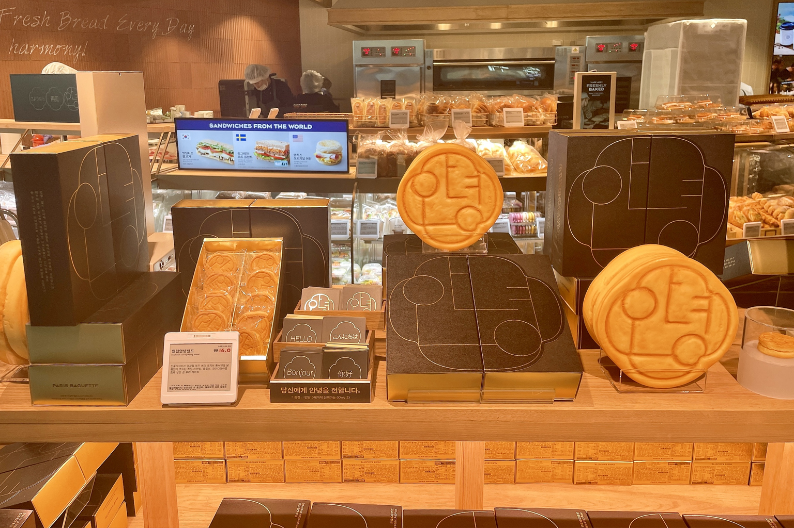

인천공항 안녕샌드
파리바게뜨 인천공항 한정 쿠키 샌드 — 조청 캐러멜·들깨·마카다미아 선물 과자.
인천안녕샌드는 파리바게뜨 지역 한정 ‘샌드’ 시리즈의 인천공항 버전입니다. 버터 쿠키 사이에 조청 캐러멜·통들깨·마카다미아를 넣은 디저트 과자로, 계란·햄 샌드위치와는 다릅니다.
쿠키 겉면에는 ‘안녕’ 메시지와 한국 전통 문양 로고가 새겨져 있어 출국·환승 기념·선물로 많이 삽니다. 제1터미널 에어랩 등 공항 내 파리바게뜨에서 판매하며, 매장·재고는 터미널·시기에 따라 다를 수 있습니다.
인천안녕샌드는 파리바게뜨 지역 한정 ‘샌드’ 시리즈의 인천공항 버전입니다. 버터 쿠키 사이에 조청 캐러멜·통들깨·마카다미아를 넣은 디저트 과자로, 계란·햄 샌드위치와는 다릅니다.
쿠키 겉면에는 ‘안녕’ 메시지와 한국 전통 문양 로고가 새겨져 있어 출국·환승 기념·선물로 많이 삽니다. 제1터미널 에어랩 등 공항 내 파리바게뜨에서 판매하며, 매장·재고는 터미널·시기에 따라 다를 수 있습니다.
사는 팁
구매 팁 보안검색·탑승 전 여유를 두고 사세요. 선물용 박스 과자라 보통 상온 보관입니다. 지도·공항 안내에서 ‘파리바게뜨’·‘인천안녕샌드’로 검색해 보세요.